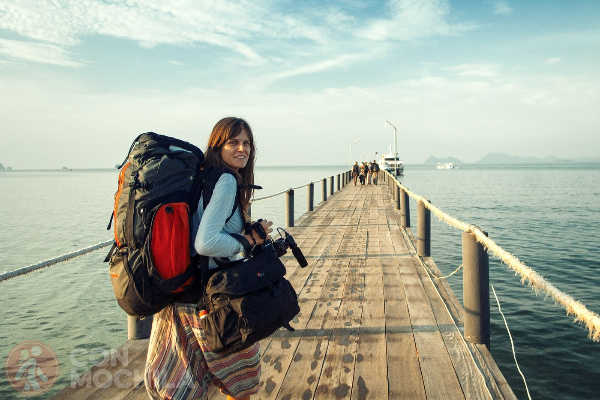

TIPS IMPERDIBLES PARA TU VIAJE
Antes de arrancar tu viaje , no te pierdas estos tips, que te van a facilitar muchas cosas!

Las mejores apps para viajar!
Ahora sí, aquí abajo les dejamos nuestro listado de las mejores aplicaciones para viajar. Dividimos las apps por categorías así es más sencillo para ustedes en el caso de que estén interesados en algún tipo de aplicación en particular.
TRANSPORTE Y UBICACIÓN
Waze
Si deciden alquilar un auto, esta aplicación les servirá para obtener información actualizada sobre el tráfico y la mejor ruta a seguir en tiempo real. Además, les da la posibilidad deprogramar sus próximos viajes, y les indicará a qué hora deben salir para arribar al horario deseado. Esta app tiene muchísimas funciones y es posible personalizarla a través de las configuraciones. Muy recomendables si son nuevos en la ciudad!
Moovit
Esta aplicación les muestra cómo llegar hasta el lugar que quieren ir de la manera más rápida y >usando el medio de transporte público más conveniente. Muestra rutas de trenes, colectivos, metro y de todos los transportes disponibles que haya en la ciudad. Además provee información sobre frecuencias y costos de boletos. Es sumamente útil para recorrer de la mejor manera una ciudad grande.
City Maps 2 Go
Otra de las mejores aplicaciones para viajar es City Maps 2 Go. Esta app les permite descargar mapas enteros de las ciudades que van a visitar parapoder consultarlos sin conexión en el momento que lo necesiten! Además, pueden obtener guías de viaje y de lugares de interés para visitar en el destino del cual hayan descargado el mapa. Es muy útil para manejarse de manera independiente en una ciudad desconocida. No puede faltar en su viaje!
ALOJAMIENTO
Airbnb
Es una plataforma para viajeros que cada vez toma más relevancia, ya que es una gran opción a la hora de viajar y elegir sentirse como en casa, alojándose en la comodidad de un departamento o casa y no en hoteles! En Airbnb pueden ver habitaciones, pisos y apartamentos para alquilar, además pueden comparar de manera sencilla los precios por noche.
Booking
Booking es una de las aplicaciones más populares que permite reservar alojamiento. Cuenta con fotos e imágenes reales de los lugares, y ademáspueden ver los comentarios y puntuaciones de los usuarios y el detalle de los servicios ofrecidos. En la mayoría de los lugares pueden hacer reservas con cancelación gratuita y pueden encontrar promociones y descuentos.
Hostelworld
Pueden reservar hostels y albergues en cualquier parte del mundo. Utilizando los filtros de ubicación, precio, tipo de habitación, servicios y más. También puedenver calificaciones de huéspedes anteriores , con fechas de publicación y nacionalidad del usuario. Los hostels siempre son una buena opción para los primeros días de un viaje, por lo que recomendamos tener esta app a mano!
Couchsurfing
Es de nuestras aplicaciones para viajar favoritas! Couchsurfing es una comunidad global compuesta por anfitriones y viajeros de todo el mundo. Esta app permite a los anfitriones a hospedar a extranjeros, y a los viajeros les da la posibilidad de parar en casas de locales en vez de hoteles, lo cual facilita el intercambio cultural! Además, los usuarios de la plataforma pueden asistir a eventos exclusivos organizados para viajeros, todo de manera gratuita!
COMIDA Y PASEOS
Food Spotting
Sin dudas algo que no puede faltar en un viaje es probar platos locales y conocer restaurantes de comidas típicas! Utilizando su ubicación, esta app les mostrará lugares cercanos donde otros viajeros han tomado fotografías de platos de comida. Al tener fotos de usuarios, esta app se considera confiable y es de gran ayuda para elegir donde comer entre varias opciones de restaurantes. Si la comida es algo relevante cuando viajan, no olviden descargar esta app!
Tripadvisor
Otra de las mejores aplicaciones para viajar por el mundo es Tripadvisor. Quién no la usó alguna vez para leer comentarios y referencias de lugares que quieren visitar!? Aquí encontrarán los mejores hoteles, restaurantes, bares y actividades para hacer en cada ciudad a modo de guía. Es super sencilla de usar! Podrán leer reseñas y ver las puntuaciones que dan los usuarios a los distintos lugares, para poder elegir lo que más se adapte a su viaje!
VUELOS
Flysmart
Si van a viajar a otro país, lo más probable es que tengan que tomar un vuelo, y esta aplicación les va a servir para encontrar información completa y detallada de los aeropuertos. Desde la ubicación de sus tiendas y los servicios disponibles en cada aeropuerto, hasta las puertas de embarque y el horario de arribo de los vuelos… Toda esa info y más, la obtienen a través de Flysmart!
Skyscanner
Como lo dice el nombre, este buscador de vuelos escanea y compara todos los datos de las aerolíneas para mostrar a los usuarios las opciones más económicas de acuerdo a su lugar de destino. Además se pueden programar alertas para destinos elegidos, avisos de bajas y subas de precios, ofertas imperdibles, entre otras cosas. Todo viajero debería tener esta app en su teléfono móvil!COSAS UTILES PARA TU BOLSO DE MANO
¿Están por emprender un viaje? Hoy les traemos un listado en el cual les contamos qué llevar en la valija de mano. La idea es que con estos pequeños elementos sus viajes en avión sean más prácticos y se transformen en experiencias más placenteras.
Documentos y dinero
Lo primero que deben colocar en su bolso de mano son sus documentos de identificación y por supuesto el dinero para el viaje o tarjetas de crédito. Su documentación será lo que requerirán con mayor frecuencia, por lo que debe estar bien organizada y a mano para cuando la necesiten. Les recomendamos hacer copias de sus pasaportes o documentos importantes y conservarlas en otros lugares, como en la valija que despachan a bodega, por seguridad. Además, por si acaso, pueden crear su propia caja fuerte y conservar esas copias de manera digital en plataformas como Onedrive, Google Drive, Dropbox, Icloud Drive, etc.
Medicamentos

En caso que necesiten llevar algún tipo de medicamento, no olviden revisar si este es legal en el país de destino, además de llevar solo la cantidad que necesitarán para el consumo propio, según la duración de su estadía. Además, es recomendable que se aseguren de tener la receta o prescripción médica a mano a la hora de pasar los controles de seguridad. Si tienen alguna duda, pueden consultar a la aerolínea antes de meter en la valija de mano algo que crean que les podría traer problemas.
Objetos electronicos
Los objetos electrónicos (celular, laptop, cámara de fotos, cargadores y baterías) también deben llevarlos consigo, debido a que en la valija grande pueden llegar a sufrir algún tipo de golpe durante la manipulación de carga y descarga de equipaje en los aeropuertos. ¿Nuestra recomendación? Llevar un cargador portátil siempre! Estos cargadores son muy útiles, porque de más está decir que hoy casi todo funciona a baterías y van a necesitar cargar algún dispositivo tarde o temprano. Por eso, qué mejor que un cargador portátil, para poder seguir divirtiéndose en esos vuelos de avión de más de 12 horas, donde no hay batería que aguante!
Almohada, antifaz y tapones
Puede parecer algo de poca importancia, pero no poder dormir en un vuelo de 14 horas o en un hostel porque el de al lado ronca, o porque hay mucha luz no es poca cosa! Por estas razones, llevar tanto tapones para o√≠dos como un antifaz, son indispensables para cualquier viaje. Además, llevar una almohada cervical tambi√©n les puede salvar la vida en los aviones, y más a√∫n en esos asientos que se reclinan muy poco. Lo divertido es que vienen con muchos dise√±os distintos para elegir üòâ .
Tips básicos sobre cómo sacar buenas fotos con el celular!
Sin dudas cuando estamos planeando un viaje pensamos en cómo vamos a poder retratar todos los lugares y momentos que vivamos durante la travesía.
Muchos nos preguntan ¿llevo una cámara o con la del celu va a ser suficiente? Nosotros consideramos que no hace falta una cámara, y por eso hicimos este artículo en el que les vamos a contar cómo sacar buenas fotos con el celular!
La idea de este artículo es dejarles algunos tips para que sepan cómo sacar buenas fotos con el celular, así pueden viajar y hacer sus recorridos livianos, sin cargar una cámara profesional o semi profesional.
Les dejamos un listado con tips y recomendaciones para lograr buenos resultados:
1. LUZ NATURAL. Siempre que se pueda, es lo ideal. Se logran mejores resultados y mayor calidad de imagen.
Evitar el uso del flash. La mayoría de las veces perjudica las fotos. Puede iluminar mucho un elemento y quemar otros.
Utilizar la cuadrícula. Ayuda muchísimo para lograr una buena foto. Por ejemplo, para asegurarnos de que la toma será simétrica y equilibrada.
2. COMPOSICION. La composición es todo lo que entra en el encuadre de la cámara. Tener en cuenta qué elementos queremos que salgan y cuáles no. Observar y ordenar detenidamente cada cosa.
3. EVITAR EL USO DEL ZOOM. A menos que sea óptico, no se recomienda el uso del zoom porque más que mejorar, arruina las fotos y las deja pixeladas.
4. MOVERSE. Para lograr la mejor foto hay que descubrir cuál es el mejor ángulo. A veces es necesario pararse arriba de una silla y otras veces hay que agacharse! Prueben y muévanse hasta conseguir el mejor ángulo para fotografiar ese objeto o paisaje.
5. ELEMENTOS Hay distintos elementos que nos pueden ayudar a lograr diferentes fotos. Por ejemplo, contar con un trípode es muy útil para fotos nocturnas porque ayuda a que no salgan movidas; tener un ojo de pez le da un efecto particular a las fotos, o tener un selfie stick puede venir bien si viajan solos!
6. UTILIZAR UN EDITOR. Los programas de edición son grandes aliados, y hay muchísimas opciones para los dispositivos móviles. Con estas apps se puede recortar, encuadrar, mejorar la luz o el contraste de las fotos, entre muchas otras cosas.